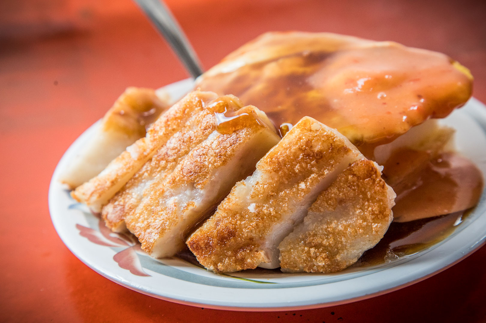

台中美食
一中位於臺中市北區的大型商圈，(亦稱一中街、一中街商圈、台中一中商圈）
一中商圈位於中友百貨附近
，與三民商圈連成一氣，附近有臺中科技大學、臺中一中、台灣體育運動大學等學校，學生人口眾多，小吃攤、飲食店林立，各種新潮流行資訊在這隨處可見、
隨手可得。每到假日，人潮眾多，十分熱鬧！育才街上多是小吃攤，而服飾店多在小巷子中。各式新潮前衛的玩意都會在此先出現，若你是流行的追求者，一中夜市絕對不能錯過。

宮原眼科(400台中市中區中山路20號)
中區｜宮原眼科・不看眼科的冰淇淋專賣店
宮原眼科除了販售各門市都有的點心、糕點外，另還販賣冰淇淋及茶飲，並將巧克力冰淇淋細分為從純度44%~100%，隨顧客喜好做選擇，並可搭配土鳳梨酥、乳酪蛋糕等招牌產品，新鮮有趣的銷售商品每天都帶來大批嚐鮮人潮，也為這個跨時代的建築再次注入滿滿的生氣與活力。

王家菜頭粿糯米腸台中第二市場排隊名店
王家菜頭粿糯米腸就在台中第二市場內，對面是另一家人氣名店老賴紅茶，基本上這個位置幾乎都是滿滿排隊的人，而且真的非常難停車，最讓人詬病的還是外面常常有人違規併排停車，乖乖的去找停車位吧，不然肯定會被檢舉。
一套吃下就大概就是60元上下，統包就是85元，組合價都幫你算好了，不用動頭腦，最多人點的大概就是菜頭粿+米腸+蛋。
